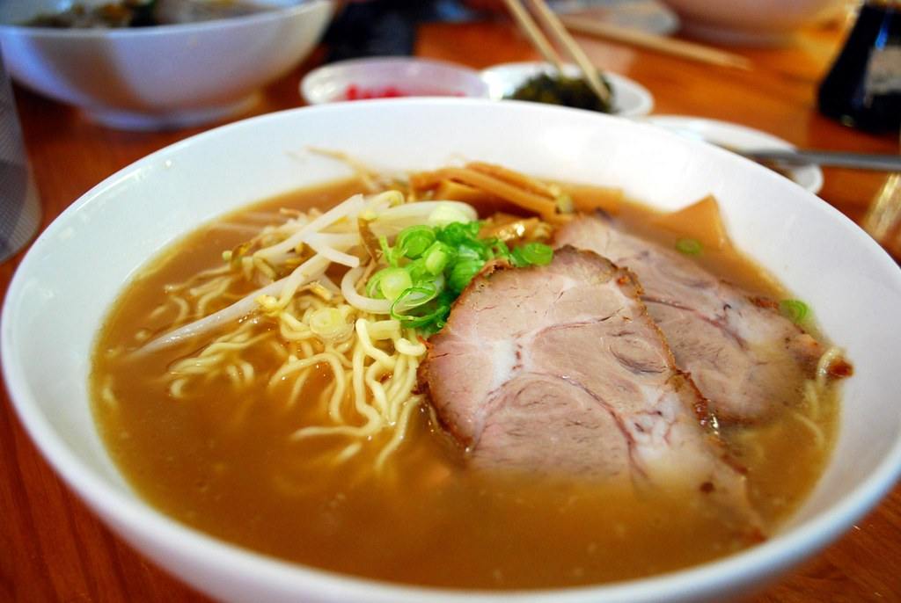
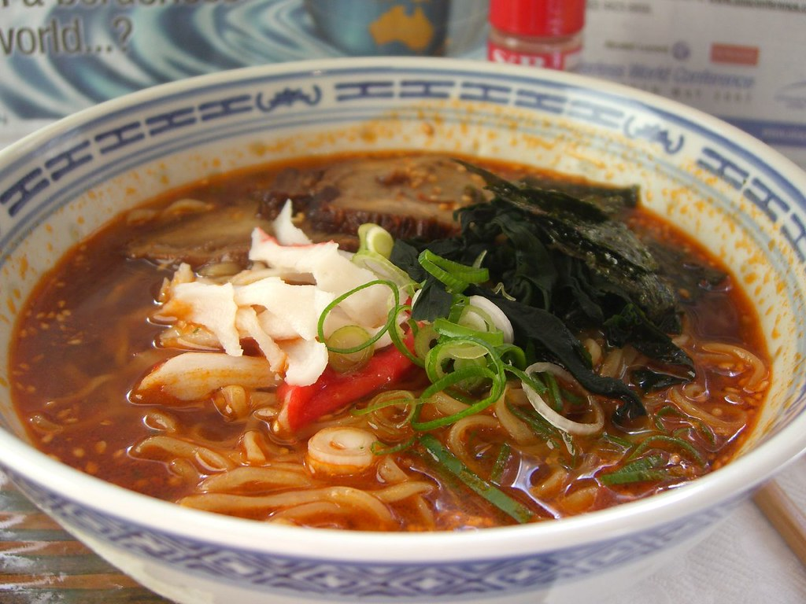
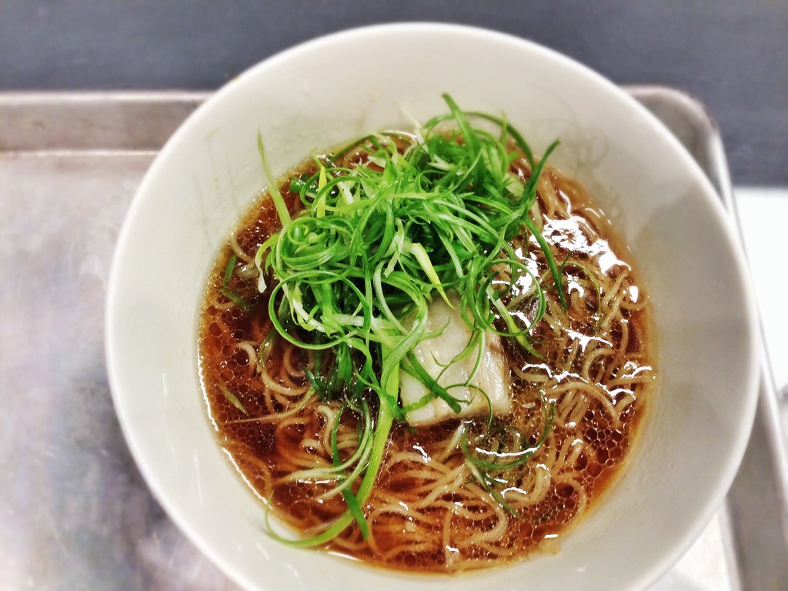
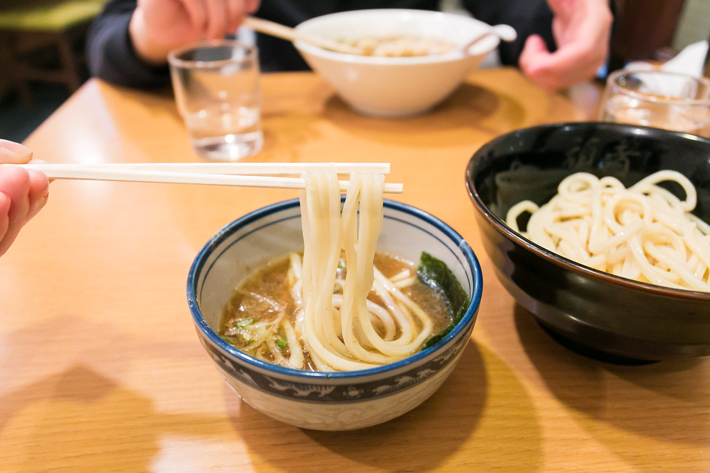

Tonkotsu Ramen
Originating from modern-day Fukuoka and lending its mouthwatering fragrance to Tokyo’s Asakusa region, tonkotsu ramen is made from boiling pork bones for hours until it brings a creamy cloudy look to the tonkotsu broth.

Originating from modern-day Fukuoka and lending its mouthwatering fragrance to Tokyo’s Asakusa region, tonkotsu ramen is made from boiling pork bones for hours until it brings a creamy cloudy look to the tonkotsu broth.

Coming from the Sapporo region of Hokkaido, miso ramen takes its name from its main ingredient. This broth is strong and savory and has an opaque appearance

Shoyu means soy sauce in Japanese and this style of noodle dish was actually the first type of ramen and is still going strong. There’s lots of different varieties of shoyu ramen but the taste is normally salty and tangy.

Shio means salt and this style of ramen tends to be light and transparent. It’s often made by boiling down chicken bones and flavored with seafood based products like dried sardines, dashi stock, and bonito flakes.

These thick and hearty ramen noodles are cooked, plunged into cool water, and then served alongside a bowl of tare ramen broth. You dip the noodles and let the thick soup coat each strand in tasty moisture.